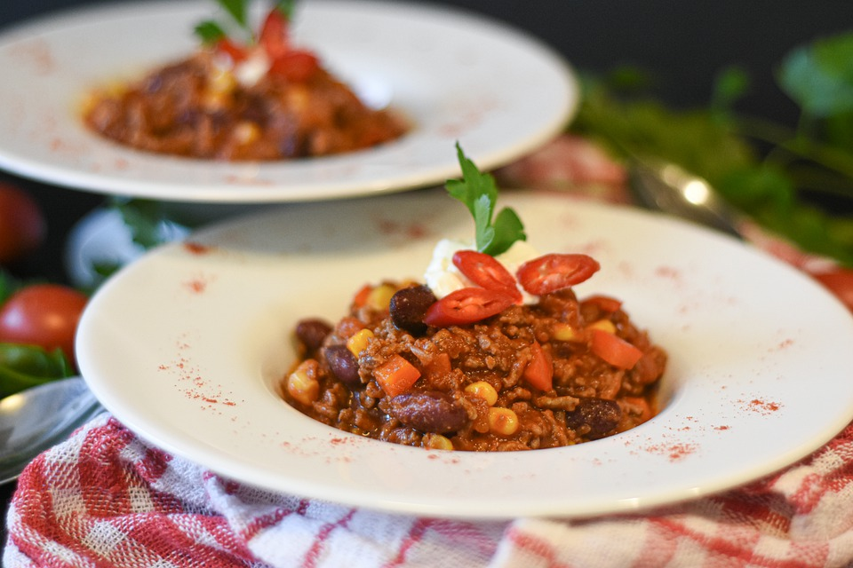

Easy Chili

Description
If you like Wendy's chili, this is a reasonable facsimile. It has that savory meatiness with a touch of sweetness for a fulfilling meal.
Ingredients
- Ground beef, 2 lbs
- Bell peppers, diced, 1 cup
- Celery, sliced, 1 cup
- White onion, chopped, 1 cup
- Tallow or Cooking oil, 2 tbsp
- Diced tomato, 1 can
- Kidney beans, 1 can
- Pinto beans, 1 can
- Water, 1 can
- Mexican chili powder, 2 tbsp
- Cumin, 1 tsp
- Garlic powder, 1 tsp
- Brown sugar, 2 tbsp
- Louisiana hot sauce, 1 tbsp
Steps
- Lightly sautee peppers, celery and onion
- Add the ground beef and brown it
- Stir in the canned tomato, canned beans and a can of water
- Add chili powder, cumin, garlic powder, brown sugar and hot sauce, and stir
- Simmer 45 minutes, stirring occassionally
- Serve and enjoy!
Go Back Home